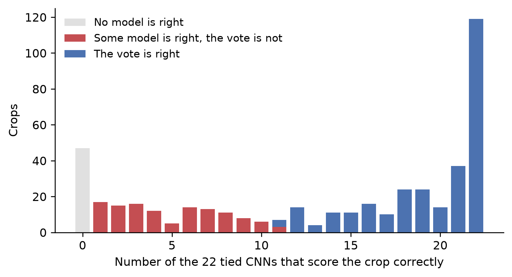
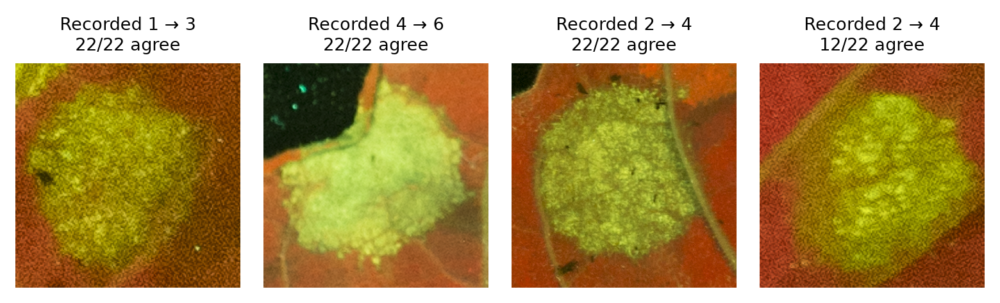
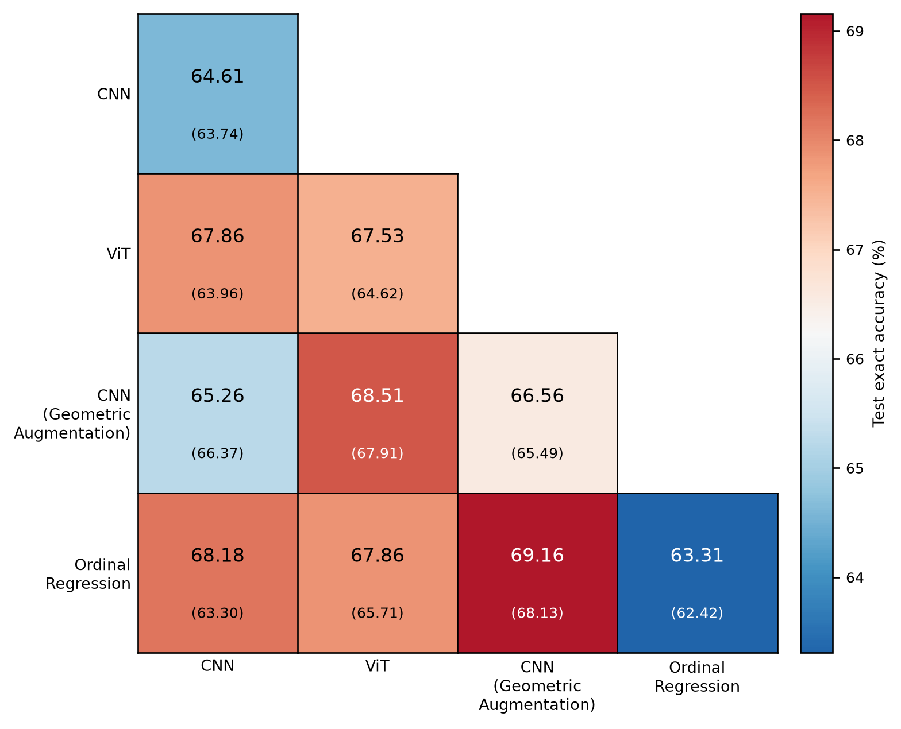
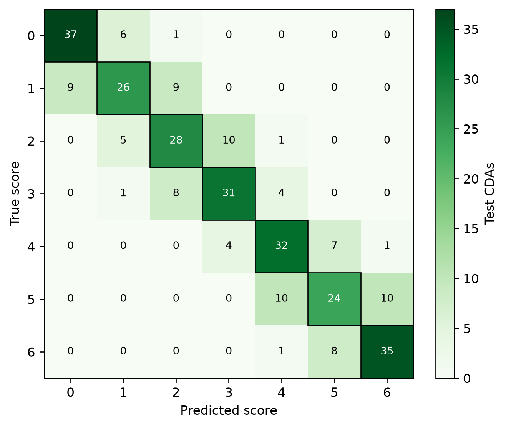
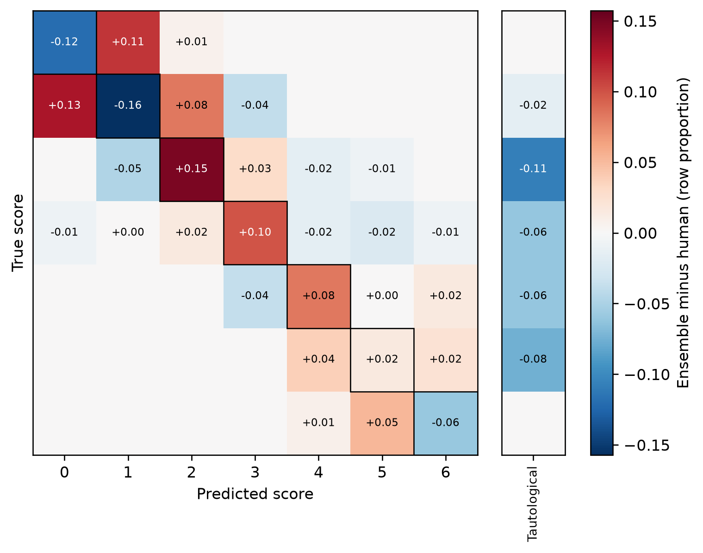

Code
# 1.1
from pathlib import Path
import numpy as np
import pandas as pd
import matplotlib.pyplot as plt
plt.rcParams.update({"figure.dpi": 120})
THESIS_PLOTS = Path("thesis_plots")
THESIS_PLOTS.mkdir(exist_ok=True)Date: 13/09/2026
Goal:
Test whether combining the CNNs that cross-validation cannot tell apart beats using one of them.
Hypothesis:
It will not. The 22 tied CNNs are trained on the same 1,834 crops and give the same score as each other on 77.9% of held-out crops, so most of what one gets wrong the others get wrong too. Averaging cannot fix a shared mistake.
Rationale:
At least one of the 22 is right on 89.67% of crops while the best single one reaches 63.96%. That gap is worth testing even if the models are correlated. The 22 agree exactly on 77.9% of crops and to within one score on 99.7%, so where they disagree it is the same adjacent-score confusion the human raters show against each other.
Members, rule and any choice are made on the ensemble split (455 crops, held out of all training). test (308 crops) is scored once. Both are reported.
# 1.1
from pathlib import Path
import numpy as np
import pandas as pd
import matplotlib.pyplot as plt
plt.rcParams.update({"figure.dpi": 120})
THESIS_PLOTS = Path("thesis_plots")
THESIS_PLOTS.mkdir(exist_ok=True)# 1.2
# A grid's single best config is not reproducibly the best: on 2,289 cross-validation
# crops the standard error near 0.65 is about 1.0 pp, and 22 of the 8,640 configs sit
# inside that of the winner. The tie is defined on cross-validation only, so it never
# touches `ensemble` or `test`.
#
# Predictions come from pred_cache/probs.npz, built by build_cache.py in this folder:
# every saved model scored over both held-out splits, full softmax rather than argmax.
ROOT = Path.cwd().parents[1]
Z = np.load("pred_cache/probs.npz", allow_pickle=True)
ye, yt = Z["ye"].astype(int), Z["yt"].astype(int)
GRID = ROOT / "models/03_Medoid_CNN_RandomSearch/01_Categorical_Loss"
res = pd.concat(
[pd.read_csv(GRID / "random_search_results.csv")]
+ [pd.read_csv(p) for p in (GRID / "parts").glob("*.csv")],
ignore_index=True).drop_duplicates("model_id").set_index("model_id")
v = res["avg_vaf"]
se_cv = float(np.sqrt(v.max() * (1 - v.max()) / 2289))
tied = set(v[v >= v.max() - se_cv].index)
keep = [i for i, m in enumerate(Z["cnn_ids"]) if m in tied]
assert len(set(Z["cnn_ids"][keep].tolist())) == len(keep), "duplicate model_id in the cache"
Qe, Qt = Z["cnn_e"][keep], Z["cnn_t"][keep] # softmax, (models, crops, 7)
He, Ht = Qe.argmax(2), Qt.argmax(2) # each model's predicted score
nC = len(keep)
print(f"best cross-validated accuracy {v.max():.4f}, 1 SE = {se_cv:.4f}")
print(f"{nC} configs tied within 1 SE, all with saved weights")
print(f"ensemble split {len(ye)} crops, test split {len(yt)} crops")best cross-validated accuracy 0.6457, 1 SE = 0.0100
22 configs tied within 1 SE, all with saved weights
ensemble split 455 crops, test split 308 crops# 1.3
# The grid recorded a test_acc per config when it trained it. If the matrix is built
# right, the accuracy recomputed here must equal that number, model for model.
here = (Ht == yt[None, :]).mean(1)
rec = res.reindex(Z["cnn_ids"][keep])["test_acc"].to_numpy(float)
print(f"max |here - recorded| over the {nC} models = {np.abs(here - rec).max():.5f}")max |here - recorded| over the 22 models = 0.00000# 1.4
def exact(pred, y):
return float(np.mean(pred == y))
def near(pred, y):
return float(np.mean(np.abs(pred - y) <= 1))
def mae(pred, y):
# Mean absolute error in score units: the natural loss for an ordered target, since
# it charges a 0-scored-as-6 seven times what it charges a 3-scored-as-4.
return float(np.mean(np.abs(pred - y)))
def vote(P):
# Plurality: the score the most members predicted.
return np.array([np.bincount(P[:, j], minlength=7).argmax() for j in range(P.shape[1])])
def mean_softmax(Q):
# Average the 22 probability vectors, then take the argmax of the average.
return Q.mean(0).argmax(1)
# Paired bootstrap: resample the 308 test crops and recompute both accuracies on the same
# resample, so the comparison is not inflated by the two rules sharing crops.
BOOT = np.random.default_rng(0).integers(0, len(yt), size=(10000, len(yt)))
def paired(a, b):
da, db = (a == yt).astype(float), (b == yt).astype(float)
d = da[BOOT].mean(1) - db[BOOT].mean(1)
return (float(da.mean() - db.mean()), float(np.quantile(d, .025)),
float(np.quantile(d, .975)), min(1.0, 2 * min((d <= 0).mean(), (d >= 0).mean())))
print(f"1 SE on 455 ensemble crops = {100 * np.sqrt(.65 * .35 / len(ye)):.2f} pp")
print(f"1 SE on 308 test crops = {100 * np.sqrt(.65 * .35 / len(yt)):.2f} pp")1 SE on 455 ensemble crops = 2.24 pp
1 SE on 308 test crops = 2.72 pp# 2.1
n_right_e = (He == ye[None, :]).sum(0) # how many of the 22 get each crop right
oracle = float((n_right_e > 0).mean())
best_i = int(np.argmax((He == ye[None, :]).mean(1)))
print(f"at least one of the {nC} correct : {oracle:.4f}")
print(f"best single model : {(He[best_i] == ye).mean():.4f}")
print(f"gap : {oracle - (He[best_i] == ye).mean():.4f}")at least one of the 22 correct : 0.8967
best single model : 0.6396
gap : 0.2571# 2.2
# Pairwise agreement between members, and how far apart they are when they disagree.
ex_p, nm_p = [], []
for i in range(nC):
for j in range(i + 1, nC):
dif = np.abs(He[i] - He[j])
ex_p.append((dif == 0).mean()); nm_p.append((dif <= 1).mean())
print(f"pairwise: same score {100 * np.mean(ex_p):.2f}%, within 1 score {100 * np.mean(nm_p):.2f}%, "
f"2 or more apart {100 * (1 - np.mean(nm_p)):.2f}%")pairwise: same score 77.87%, within 1 score 99.73%, 2 or more apart 0.27%# 2.3
# A vote returns the most common answer, so it can only win where the correct score IS
# the most common answer. Splitting the crops by how many members are right separates
# the part of the 89.67% a vote could reach from the part it cannot.
v_e = vote(He)
win = v_e == ye
x = np.arange(nC + 1)
bins = np.arange(nC + 2) - 0.5
c_win, _ = np.histogram(n_right_e[win], bins=bins)
c_none, _ = np.histogram(n_right_e[n_right_e == 0], bins=bins)
c_unreach, _ = np.histogram(n_right_e[~win & (n_right_e > 0)], bins=bins)
# Stacked, not overlaid: k = 11 is the only column holding both a reachable and an
# unreachable crop, and drawing them from zero would hide the smaller behind the larger.
fig, ax = plt.subplots(figsize=(6.2, 3.4))
ax.bar(x, c_none, color="#e0e0e0", label="No model is right")
ax.bar(x, c_unreach, bottom=c_none, color="#C44E52",
label="Some model is right, the vote is not")
ax.bar(x, c_win, bottom=c_none + c_unreach, color="#4C72B0", label="The vote is right")
ax.set_xlabel(f"Number of the {nC} tied CNNs that score the crop correctly")
ax.set_ylabel("Crops")
ax.legend(frameon=False, fontsize=9)
ax.spines[["top", "right"]].set_visible(False)
fig.tight_layout()
fig.savefig(THESIS_PLOTS / "vote_22_cnns.png", dpi=300, bbox_inches="tight")
plt.show()
gap = ~win & (n_right_e > 0)
print(f"crops the {oracle:.2%} counts but no vote can reach: {int(gap.sum())}")
print(f" median models correct on them: {np.median(n_right_e[gap]):.1f} of {nC}")
print(f" share with fewer than half the models correct: {(n_right_e[gap] < nC / 2).mean():.3f}")
crops the 89.67% counts but no vote can reach: 120
median models correct on them: 4.5 of 22
share with fewer than half the models correct: 0.975# 2.4
# A crop the whole committee places two or more scores from its recorded label is either
# mislabelled or intrinsically hard. Off-by-one is adjacent-score ambiguity and is counted
# separately rather than shown.
from PIL import Image
_modal = np.array([np.bincount(Ht[:, j], minlength=7).argmax() for j in range(len(yt))])
_agree = np.array([np.bincount(Ht[:, j], minlength=7).max() for j in range(len(yt))])
_off = np.abs(_modal - yt)
_files = [str(f) for f in Z["files_t"]]
cle = pd.DataFrame({"filename": _files, "true": yt, "modal": _modal, "agree": _agree}
)[_off >= 2].sort_values("agree", ascending=False)
print(f"{len(cle)} of {len(yt)} test crops are placed >=2 scores from their recorded label")
print(f"{int(((_off == 1) & (_agree >= 0.6 * nC)).sum())} more are off by exactly 1 with a "
f">=60% majority, which is adjacent-score ambiguity rather than a label error")
fig, axes = plt.subplots(1, len(cle), figsize=(1.65 * len(cle), 2.1), squeeze=False)
for ax, (_, r) in zip(axes.ravel(), cle.iterrows()):
q = ROOT / "data" / "cropped_images_medoid" / str(int(r["true"])) / r["filename"]
ax.imshow(np.asarray(Image.open(q)))
ax.set_title(f"Recorded {int(r['true'])} \u2192 {int(r['modal'])}\n"
f"{int(r['agree'])}/{nC} agree", fontsize=8)
ax.axis("off")
fig.tight_layout()
fig.savefig(THESIS_PLOTS / "candidate_label_errors_22.png", dpi=300, bbox_inches="tight")
plt.show()
cle.assign(pct=(100 * cle.agree / nC).round(1))4 of 308 test crops are placed >=2 scores from their recorded label
89 more are off by exactly 1 with a >=60% majority, which is adjacent-score ambiguity rather than a label error
| filename | true | modal | agree | pct | |
|---|---|---|---|---|---|
| 10 | _DSC1805_3_4_6.tif | 1 | 3 | 22 | 100.0 |
| 180 | DSC_8266_3_1_1.tif | 4 | 6 | 22 | 100.0 |
| 267 | DSC_9237_3_3_2.tif | 2 | 4 | 22 | 100.0 |
| 198 | _DSC0170_2_1_5.tif | 2 | 4 | 12 | 54.5 |
# 2.5
# The oracle can only rise as members are added, so before reading anything into 89.67%:
# how much of it is pool size? Two checks. First, what the oracle would be if the same
# models failed independently of one another. Second, other pools cut to the same n.
rng = np.random.default_rng(0)
orc = lambda P: float((P == ye[None, :]).any(0).mean())
p_i = (He == ye[None, :]).mean(1)
print(f"observed oracle {orc(He):.4f}; if the {nC} failed independently {1 - np.prod(1 - p_i):.4f}")
for n in (2, 3, 5, 12, 22):
obs = np.mean([orc(He[rng.choice(nC, n, replace=False)]) for _ in range(200)])
print(f" n={n:2d}: observed {obs:.4f} independent {1 - (1 - p_i.mean()) ** n:.4f}")observed oracle 0.8967; if the 22 failed independently 1.0000
n= 2: observed 0.7175 independent 0.8527
n= 3: observed 0.7618 independent 0.9435
n= 5: observed 0.8087 independent 0.9917
n=12: observed 0.8709 independent 1.0000
n=22: observed 0.8967 independent 1.0000# 3.1
RULES = {
"Best single model": (He[best_i], Ht[best_i]),
"Plurality vote": (vote(He), vote(Ht)),
"Mean softmax": (mean_softmax(Qe), mean_softmax(Qt)),
}
tab = pd.DataFrame([
{"rule": k,
"ensemble exact": exact(pe, ye),
"test exact": exact(pt, yt),
"test near-miss": near(pt, yt),
"test MAE": mae(pt, yt)}
for k, (pe, pt) in RULES.items()])
tab.round(4)| rule | ensemble exact | test exact | test near-miss | test MAE | |
|---|---|---|---|---|---|
| 0 | Best single model | 0.6396 | 0.6461 | 0.9773 | 0.3766 |
| 1 | Plurality vote | 0.6330 | 0.6494 | 0.9870 | 0.3636 |
| 2 | Mean softmax | 0.6374 | 0.6461 | 0.9903 | 0.3636 |
# 3.2
# Each rule against the best single model, on the same 308 test crops.
base = RULES["Best single model"][1]
for k, (_, pt) in list(RULES.items())[1:]:
d, lo, hi, p = paired(pt, base)
print(f"{k:18s} {100 * d:+6.2f} pp 95% CI [{100 * lo:+.2f}, {100 * hi:+.2f}] p = {p:.3f}")Plurality vote +0.32 pp 95% CI [-2.60, +3.25] p = 0.930
Mean softmax +0.00 pp 95% CI [-2.92, +2.92] p = 1.000# 4.1
# Four families are available. The 22 CNNs share an architecture AND a training set, so a
# shared mistake is expected. The others vary one thing or both:
# ViT different architecture, same crops
# CNN (Geometric Augmentation) same architecture, different crops (models/07 trains from the
# augmented pool; its tie is ranked on avg_vaf_orig, accuracy on the
# ORIGINAL crops in the fold, since its plain avg_vaf is measured
# over a fold containing augmented copies)
# Ordinal Regression neither: 12 hand-built features, one polr fit (analyses/03)
GRIDS = {"ViT": ("models/04_Medoid_ViT_RandomSearch/01_Categorical_Loss", "vit", "avg_vaf"),
"CNN (Geometric Augmentation)": ("models/07_Medoid_CNN_GeomAug/01_MatchLargestClass", "geo",
"avg_vaf_orig"),
}
# The cGAN-augmented grid is deliberately absent. Ranked the way every other family is, on
# accuracy over the original crops, its best configuration reaches 61.04% on test against
# 61.69% for the plain CNN trained on the smaller unaugmented set, so the augmentation does
# not earn a place among the families being combined. It could not be included on equal
# terms in any case: its 10 configurations tied on avg_vaf_orig rank 1,129th to 4,111th on
# plain avg_vaf, and TopNStore keeps only the top 100 by avg_vaf, so none of them was
# written to disk. The only cGAN weights that exist are the 100 selected on a validation
# fold dominated by generated crops, which average 51.30% on test alone. Including that set
# put a cell 13 pp below everything else on the heatmap and compressed the range the other
# families occupy. Its predictions remain in pred_cache/probs.npz under the "cgan" key.
FAM = {"CNN": (Qe, Qt)}
FAM_IDS = {"CNN": Z["cnn_ids"][keep]}
for name, (base_dir, tag, col) in GRIDS.items():
g = ROOT / base_dir
r = pd.concat([pd.read_csv(g / "random_search_results.csv")]
+ [pd.read_csv(q) for q in (g / "parts").glob("*.csv")],
ignore_index=True).drop_duplicates("model_id").set_index("model_id")
w = r[col].dropna()
tie = set(w[w >= w.max() - float(np.sqrt(w.max() * (1 - w.max()) / 2289))].index)
idx = [i for i, m in enumerate(Z[f"{tag}_ids"]) if m in tie]
FAM[name] = (Z[f"{tag}_e"][idx], Z[f"{tag}_t"][idx])
FAM_IDS[name] = Z[f"{tag}_ids"][idx]
# The ordinal regression's class probabilities, exported by analyses/03 from the same
# train+val fit for both held-out splits.
PC = [f"p{k}" for k in range(7)]
nd = pd.read_csv(ROOT / "analyses/03_feature_classifiers/model_cache/nondl_heldout_predictions.csv")
fe = [str(f).replace(".tif", "") for f in Z["files_e"]]
ft = [str(f).replace(".tif", "") for f in Z["files_t"]]
ne = nd[nd.split == "ensemble"].set_index("image_id").reindex(fe)
nt = nd[nd.split == "test"].set_index("image_id").reindex(ft)
assert (ne["true"].to_numpy() == ye).all() and (nt["true"].to_numpy() == yt).all()
FAM["Ordinal Regression"] = (ne[PC].to_numpy(float)[None], nt[PC].to_numpy(float)[None])
for k, (qe, qt) in FAM.items():
print(f"{k:20s} {len(qe):3d} members ensemble {(qe.argmax(2) == ye[None, :]).mean():.4f} "
f"test {(qt.argmax(2) == yt[None, :]).mean():.4f}")CNN 22 members ensemble 0.6162 test 0.6231
ViT 51 members ensemble 0.6168 test 0.6277
CNN (Geometric Augmentation) 17 members ensemble 0.6535 test 0.6446
Ordinal Regression 1 members ensemble 0.6242 test 0.6331# 4.2
# Do two families make errors on DIFFERENT crops? Measured three ways.
# double fault d Kuncheva & Whitaker (2003) pairwise measure: the share of crops both
# get wrong. Not corrected for the two having different accuracies.
# Yule's Q (ad - bc) / (ad + bc) on the hit/miss table. 0 = errors unrelated,
# 1 = maximally shared. Chance-corrected, and the measure to quote.
# d / independent d over what it would be if the errors were unrelated. 1 = unrelated.
# Not a named measure; kept because it reads directly and orders the
# pairs the same way Q does.
def pair_stats(A, B, same):
out = []
for i in range(len(A)):
for j in range(len(B)):
if same and j <= i:
continue
oa, ob = A[i] == ye, B[j] == ye
a = (oa & ob).mean(); b = (~oa & ob).mean(); c = (oa & ~ob).mean(); d = (~oa & ~ob).mean()
out.append((d, (a * d - b * c) / (a * d + b * c), d / ((1 - oa.mean()) * (1 - ob.mean()))))
return np.array(out)
H = {k: v[0].argmax(2) for k, v in FAM.items()}
names = list(FAM)
rows = []
for i, x in enumerate(names):
for y in names[i:]:
if x == y and len(H[x]) < 2:
continue
m = pair_stats(H[x], H[y], x == y)
rows.append({"pair": f"{x} (within)" if x == y else f"{x} + {y}",
"kind": "within" if x == y else "across", "pairs": len(m),
"double fault d": m[:, 0].mean(), "Yule Q": m[:, 1].mean(),
"d / independent": m[:, 2].mean()})
div = pd.DataFrame(rows).sort_values("Yule Q")
div.round(3)| pair | kind | pairs | double fault d | Yule Q | d / independent | |
|---|---|---|---|---|---|---|
| 3 | CNN + Ordinal Regression | across | 22 | 0.253 | 0.771 | 1.759 |
| 1 | CNN + ViT | across | 1122 | 0.257 | 0.772 | 1.754 |
| 8 | CNN (Geometric Augmentation) + Ordinal Regression | across | 17 | 0.237 | 0.776 | 1.820 |
| 6 | ViT + Ordinal Regression | across | 51 | 0.256 | 0.783 | 1.779 |
| 5 | ViT + CNN (Geometric Augmentation) | across | 867 | 0.246 | 0.801 | 1.859 |
| 2 | CNN + CNN (Geometric Augmentation) | across | 374 | 0.253 | 0.826 | 1.909 |
| 4 | ViT (within) | within | 1275 | 0.272 | 0.831 | 1.856 |
| 0 | CNN (within) | within | 231 | 0.284 | 0.867 | 1.933 |
| 7 | CNN (Geometric Augmentation) (within) | within | 136 | 0.260 | 0.902 | 2.176 |
# 4.3
# Every pair of families, and all four. Each family is averaged internally first, then
# across families, so 51 ViTs do not outvote 1 ordinal regression on member count alone.
import itertools
def combine(keys, which):
return np.stack([FAM[k][which].mean(0) for k in keys]).mean(0).argmax(1)
for keys in list(itertools.combinations(names, 2)) + [tuple(names)]:
label = " + ".join(keys) if len(keys) < len(names) else "All families"
RULES[label] = (combine(keys, 0), combine(keys, 1))
tab2 = pd.DataFrame([
{"rule": k, "ensemble exact": exact(pe, ye), "test exact": exact(pt, yt),
"test near-miss": near(pt, yt), "test MAE": mae(pt, yt)}
for k, (pe, pt) in RULES.items()]).sort_values("test exact", ascending=False)
tab2.round(4)| rule | ensemble exact | test exact | test near-miss | test MAE | |
|---|---|---|---|---|---|
| 8 | CNN (Geometric Augmentation) + Ordinal Regression | 0.6813 | 0.6916 | 0.9838 | 0.3247 |
| 6 | ViT + CNN (Geometric Augmentation) | 0.6791 | 0.6851 | 0.9870 | 0.3279 |
| 5 | CNN + Ordinal Regression | 0.6330 | 0.6818 | 0.9773 | 0.3442 |
| 3 | CNN + ViT | 0.6396 | 0.6786 | 0.9838 | 0.3377 |
| 7 | ViT + Ordinal Regression | 0.6571 | 0.6786 | 0.9773 | 0.3474 |
| 9 | All families | 0.6549 | 0.6688 | 0.9838 | 0.3474 |
| 4 | CNN + CNN (Geometric Augmentation) | 0.6637 | 0.6526 | 0.9903 | 0.3571 |
| 1 | Plurality vote | 0.6330 | 0.6494 | 0.9870 | 0.3636 |
| 0 | Best single model | 0.6396 | 0.6461 | 0.9773 | 0.3766 |
| 2 | Mean softmax | 0.6374 | 0.6461 | 0.9903 | 0.3636 |
# 4.4
# Lower triangle only: the matrix is symmetric, so the upper half repeats it.
# A plain linear Normalize, not TwoSlopeNorm: centring the colour on the best single model
# would map the 1.3 pp below it onto the same colour span as the 4.6 pp above.
# RdBu_r is trimmed at both ends so the extreme cells are not near-white or near-black.
from matplotlib.collections import LineCollection
from matplotlib.colors import LinearSegmentedColormap
_b = plt.get_cmap("RdBu_r")
CMAP = LinearSegmentedColormap.from_list("RdBu_r_t", _b(np.linspace(0.10, 0.90, 256)))
TM = np.full((len(names), len(names)), np.nan)
EM = np.full((len(names), len(names)), np.nan)
for i, a in enumerate(names):
TM[i, i] = exact(FAM[a][1].mean(0).argmax(1), yt)
EM[i, i] = exact(FAM[a][0].mean(0).argmax(1), ye)
for i, j in itertools.combinations(range(len(names)), 2):
key = f"{names[i]} + {names[j]}"
TM[i, j] = TM[j, i] = exact(RULES[key][1], yt)
EM[i, j] = EM[j, i] = exact(RULES[key][0], ye)
LBL = [x.replace(" (Geometric Augmentation)", "\n(Geometric\nAugmentation)")
.replace(" (cGAN Augmentation)", "\n(cGAN\nAugmentation)")
.replace("Ordinal Regression", "Ordinal\nRegression") for x in names]
V = np.where(np.tril(np.ones_like(TM), 0) == 1, 100 * TM, np.nan)
fig, ax = plt.subplots(figsize=(6.6, 5.4))
im = ax.imshow(V, cmap=CMAP, vmin=np.nanmin(V), vmax=np.nanmax(V))
ax.set_xticks(range(len(names)), LBL, fontsize=8)
ax.set_yticks(range(len(names)), LBL, fontsize=8)
for sp in ax.spines.values():
sp.set_visible(False)
ax.tick_params(length=0)
for i in range(len(names)):
for j in range(i + 1):
r, g, b, _ = im.cmap(im.norm(V[i, j]))
c = "white" if (0.299 * r + 0.587 * g + 0.114 * b) < 0.5 else "black"
ax.text(j, i - 0.10, f"{100 * TM[i, j]:.2f}", ha="center", va="center",
fontsize=10, color=c)
ax.text(j, i + 0.26, f"({100 * EM[i, j]:.2f})", ha="center", va="center",
fontsize=7.5, color=c)
# One stroke per edge. Rectangles per cell would paint every shared edge twice, which is
# why the earlier version had inner borders visibly heavier than outer ones.
_edges = set()
for i in range(len(names)):
for j in range(i + 1):
x0, y0 = j - 0.5, i - 0.5
for seg in (((x0, y0), (x0 + 1, y0)), ((x0, y0 + 1), (x0 + 1, y0 + 1)),
((x0, y0), (x0, y0 + 1)), ((x0 + 1, y0), (x0 + 1, y0 + 1))):
_edges.add(seg)
# clip_on=False: imshow sets the axes limits to the outer edge of the outer cells, so the
# boundary strokes sit exactly on the clip rectangle and half of each is cut away, which
# is why the left and bottom edges rendered at about half the width of the interior ones.
ax.add_collection(LineCollection(sorted(_edges), colors="black", linewidths=0.8,
capstyle="projecting", snap=True, zorder=3,
clip_on=False))
cb = fig.colorbar(im, ax=ax, fraction=0.046, pad=0.03)
cb.set_label("Test exact accuracy (%)", fontsize=8)
cb.ax.tick_params(labelsize=7.5)
cb.outline.set_linewidth(0.8)
fig.tight_layout()
fig.savefig(THESIS_PLOTS / "family_pairs.png", dpi=300, bbox_inches="tight")
plt.show()
# 4.5
# The ensemble is defined by its predictions, so a confusion matrix is the natural way to
# read what combining the two families changed. The rater matrix counts 917 judgements and
# the ensemble 308 predictions, so both are row-normalised before differencing and each
# cell of B is a change in row proportion.
from matplotlib.patches import Rectangle
BEST_PAIR = ("CNN (Geometric Augmentation)", "Ordinal Regression")
ens_t = RULES[" + ".join(BEST_PAIR)][1]
# The human matrix carries an eighth column, the tautological judgements Metric 3
# removes. They must stay in the row totals: without them the denominator is 875 and
# row-normalising gives a human diagonal of 72.23%, against the 68.92% Metric 3
# reports over all 917. A model has no such category, so its matrix is padded with a
# zero column and the two are then directly comparable.
hum = pd.read_csv(ROOT / "analyses/02_human_performance/thesis_plots/human_confusion_matrix.csv",
index_col=0).to_numpy(float)
assert hum.shape == (7, 8) and hum.sum() == 917
cm = np.zeros((7, 7))
for _t, _q in zip(yt, ens_t):
cm[int(_t), int(_q)] += 1
cm8 = np.hstack([cm, np.zeros((7, 1))])
dif = cm8 / cm8.sum(1, keepdims=True) - hum / hum.sum(1, keepdims=True)
f1, a1 = plt.subplots(figsize=(6.2, 5.2))
i1 = a1.imshow(cm, cmap="Greens")
for i in range(7):
for j in range(7):
a1.text(j, i, int(cm[i, j]), ha="center", va="center", fontsize=8,
color="white" if cm[i, j] > 0.6 * cm.max() else "black")
if i == j:
a1.add_patch(Rectangle((j - .5, i - .5), 1, 1, fill=False, edgecolor="black", lw=plt.rcParams["axes.linewidth"]))
a1.set_xticks(range(7)); a1.set_yticks(range(7))
a1.set_xlabel("Predicted score"); a1.set_ylabel("True score")
f1.colorbar(i1, ax=a1, fraction=0.046, label="Test CDAs")
f1.savefig(THESIS_PLOTS / "ensemble_test_confusion.png", dpi=300, bbox_inches="tight")
plt.show()
# The tautological column is not a predicted score, so it sits in its own axes with a gap
# rather than as an eighth column of the matrix. Both axes share one normalisation, so the
# colours are directly comparable across the gap.
f2, (a2, a3) = plt.subplots(1, 2, figsize=(7.4, 5.2),
gridspec_kw=dict(width_ratios=[7, 1], wspace=0.06))
vv = np.abs(dif).max()
norm = plt.Normalize(-vv, vv)
# A cell is labelled when the difference is worth reading OR when both sides actually put
# crops there. Leaving the second case blank would suggest neither side ever predicted it,
# when in fact they predicted it at the same rate.
both = (hum > 0) & (cm8 > 0)
i2 = a2.imshow(dif[:, :7], cmap="RdBu_r", norm=norm)
for i in range(7):
for j in range(7):
if abs(dif[i, j]) > 0.005 or both[i, j]:
a2.text(j, i, f"{dif[i, j]:+.2f}", ha="center", va="center", fontsize=7,
color="white" if abs(dif[i, j]) > 0.6 * vv else "black")
if i == j:
a2.add_patch(Rectangle((j - .5, i - .5), 1, 1, fill=False, edgecolor="black", lw=plt.rcParams["axes.linewidth"]))
a2.set_xticks(range(7)); a2.set_yticks(range(7))
a2.set_xlabel("Predicted score"); a2.set_ylabel("True score")
# Both axes keep imshow's equal aspect and share the y axis, so a cell is square in both
# and its side is set by the shared axes height / 7. That makes the strip cell identical
# in size to a matrix cell by construction. aspect="auto" here instead would stretch the
# strip to fill its own box, which is what made it the wrong width.
a3.imshow(dif[:, 7:8], cmap="RdBu_r", norm=norm)
a3.sharey(a2)
for i in range(7):
if abs(dif[i, 7]) > 0.005 or both[i, 7]:
a3.text(0, i, f"{dif[i, 7]:+.2f}", ha="center", va="center", fontsize=7,
color="white" if abs(dif[i, 7]) > 0.6 * vv else "black")
a3.set_xticks([0], ["Tautological"], rotation=90, fontsize=8)
a3.set_yticks([])
f2.colorbar(i2, ax=[a2, a3], fraction=0.046, pad=0.04,
label="Ensemble minus human (row proportion)")
f2.savefig(THESIS_PLOTS / "ensemble_confusion_vs_human.png", dpi=300, bbox_inches="tight")
plt.show()
# Per-score recall against the best single model, which is what the overall 2.28 pp is
# made of. b_chap indexes the chapter's selected model inside the CNN pool ordering; here
# it is taken directly from the augmented family.
_gk = "CNN (Geometric Augmentation)"
best_single = FAM[_gk][1][int(np.where(FAM_IDS[_gk] == 6848)[0][0])].argmax(1)
rec = lambda q: np.array([np.mean(q[yt == k] == k) for k in range(7)])
print("per-score recall, score 0 to 6")
print(" best single 6848:", rec(best_single).round(3).tolist())
print(" best ensemble :", rec(ens_t).round(3).tolist())
print(f" the two differ on {int((ens_t != best_single).sum())} of {len(yt)} crops")

per-score recall, score 0 to 6
best single 6848: [0.909, 0.568, 0.591, 0.659, 0.659, 0.364, 0.932]
best ensemble : [0.841, 0.591, 0.636, 0.705, 0.727, 0.545, 0.795]
the two differ on 42 of 308 crops# 4.7
# What "just use one model" gives, over the whole pool of tied members from all four
# families. Selecting the single best on the ensemble split is what someone would do with
# held-out data and no ensemble; it is the comparison the chapter's paragraph 16 makes.
POOL_T = np.concatenate([FAM[n][1] for n in names])
POOL_E = np.concatenate([FAM[n][0] for n in names])
pool_e = (POOL_E.argmax(2) == ye[None, :]).mean(1)
pool_t = (POOL_T.argmax(2) == yt[None, :]).mean(1)
b_ens = int(np.argmax(pool_e))
chap = FAM["CNN (Geometric Augmentation)"][1][
int(np.where(FAM_IDS["CNN (Geometric Augmentation)"] == 6848)[0][0])].argmax(1)
print(f"{len(pool_t)} tied members across the four families")
print(f" single models on test span {100 * pool_t.min():.2f}% to {100 * pool_t.max():.2f}%")
print(f" best on the ensemble split: {100 * pool_e[b_ens]:.2f}% there, "
f"{100 * exact(POOL_T.argmax(2)[b_ens], yt):.2f}% on test")
d, lo, hi, pv = paired(POOL_T.argmax(2)[b_ens], chap)
print(f" against the chapter's selected model (6848, {100 * exact(chap, yt):.2f}% test): "
f"{100 * d:+.2f} pp 95% CI [{100 * lo:+.2f}, {100 * hi:+.2f}] p = {pv:.3f}")
rules_only = tab2.loc[tab2.rule != "Best single model", "test exact"]
print(f" every combining rule lands between {100 * rules_only.min():.2f}% and "
f"{100 * rules_only.max():.2f}%")91 tied members across the four families
single models on test span 56.82% to 67.53%
best on the ensemble split: 70.33% there, 62.34% on test
against the chapter's selected model (6848, 66.88% test): -4.55 pp 95% CI [-8.77, -0.32] p = 0.040
every combining rule lands between 64.61% and 69.16%# 4.6
# Each against the best single CNN, on the same 308 test crops.
for k, (_, pt) in RULES.items():
if k == "Best single model":
continue
d, lo, hi, pv = paired(pt, base)
print(f"{k:34s} {100 * d:+6.2f} pp [{100 * lo:+6.2f}, {100 * hi:+6.2f}] p = {pv:.3f}")Plurality vote +0.32 pp [ -2.60, +3.25] p = 0.930
Mean softmax +0.00 pp [ -2.92, +2.92] p = 1.000
CNN + ViT +3.25 pp [ -0.65, +7.14] p = 0.136
CNN + CNN (Geometric Augmentation) +0.65 pp [ -3.25, +4.55] p = 0.813
CNN + Ordinal Regression +3.57 pp [ -0.65, +7.79] p = 0.125
ViT + CNN (Geometric Augmentation) +3.90 pp [ -0.32, +8.12] p = 0.084
ViT + Ordinal Regression +3.25 pp [ -1.95, +8.44] p = 0.228
CNN (Geometric Augmentation) + Ordinal Regression +4.55 pp [ +0.00, +9.09] p = 0.063
All families +2.27 pp [ -1.62, +6.17] p = 0.287# 5.1 Pulled from the tables above so the text cannot drift from the results.
mv = tab.set_index("rule")
print(f"- **The 89.67% is not spare accuracy.** {int(gap.sum())} crops sit between it and the "
f"vote, and on {(n_right_e[gap] < nC / 2).mean():.1%} of them fewer than half the members "
f"are right, a median of {np.median(n_right_e[gap]):.1f} of {nC}. A vote returns the "
f"majority answer, so the correct score being a minority opinion puts those crops out "
f"of reach of any unweighted rule.\n")
print(f"- **Neither rule raises exact accuracy.** Vote "
f"{mv.loc['Plurality vote', 'test exact']:.4f} and mean softmax "
f"{mv.loc['Mean softmax', 'test exact']:.4f} against "
f"{mv.loc['Best single model', 'test exact']:.4f} for the best single model. Both "
f"bootstrap intervals span zero.\n")
print(f"- **Both rules cut the large errors.** Near-miss rises from "
f"{mv.loc['Best single model', 'test near-miss']:.4f} to "
f"{mv.loc['Mean softmax', 'test near-miss']:.4f} and mean error falls from "
f"{mv.loc['Best single model', 'test MAE']:.3f} to "
f"{mv.loc['Mean softmax', 'test MAE']:.3f}. Averaging removes some of the errors that "
f"are 2 or more scores out; it does not turn a near miss into a hit.\n")The 89.67% is not spare accuracy. 120 crops sit between it and the vote, and on 97.5% of them fewer than half the members are right, a median of 4.5 of 22. A vote returns the majority answer, so the correct score being a minority opinion puts those crops out of reach of any unweighted rule.
Neither rule raises exact accuracy. Vote 0.6494 and mean softmax 0.6461 against 0.6461 for the best single model. Both bootstrap intervals span zero.
Both rules cut the large errors. Near-miss rises from 0.9773 to 0.9903 and mean error falls from 0.377 to 0.364. Averaging removes some of the errors that are 2 or more scores out; it does not turn a near miss into a hit.
Within one family, the reason it fails is that the members shift together. They disagree by one score and almost never by more, so when they are wrong they have all moved the same way. Averaging errors scattered around the truth recovers the middle; averaging errors that have all moved in one direction returns the shift.
# 5.2 The cross-family results, pulled from §4 so the text cannot drift.
dv = div.set_index("pair")
t2 = tab2.set_index("rule")
acr = div[div.kind == "across"]["Yule Q"]
wit = div[div.kind == "within"]["Yule Q"]
print(f"- **Errors are less related across families than within one.** Yule's Q runs "
f"{acr.min():.3f}-{acr.max():.3f} across families and {wit.min():.3f}-{wit.max():.3f} "
f"within. The one exception is CNN + CNN (Geometric Augmentation) at "
f"{dv.loc['CNN + CNN (Geometric Augmentation)', 'Yule Q']:.3f}, which sits with the within-family "
f"group: a different training set does not decorrelate a shared architecture the way "
f"a different architecture does.\n")
# Among the families whose members are individually competent, lower Q goes with higher
# combined accuracy. The cGAN family is the counterexample and is treated separately.
gp = [(f"{x} + {y}", dv.loc[f"{x} + {y}", "Yule Q"], t2.loc[f"{x} + {y}", "test exact"])
for i, x in enumerate(names) for y in names[i + 1:]]
gp.sort(key=lambda r: r[1])
from scipy.stats import spearmanr
rho = spearmanr([q for _, q, _ in gp], [v for _, _, v in gp]).statistic
best_pair = max(gp, key=lambda r: r[2])
print(f"- **Less-related errors go with a better ensemble, loosely.** Over the {len(gp)} "
f"pairs the rank correlation between Yule's Q and test accuracy is {rho:+.2f}. The "
f"lowest-Q pair, {gp[0][0]} at {gp[0][1]:.3f}, reaches {100 * gp[0][2]:.2f}%, and the "
f"highest, {gp[-1][0]} at {gp[-1][1]:.3f}, only {100 * gp[-1][2]:.2f}%. The strongest "
f"on test is {best_pair[0]} at {100 * best_pair[2]:.2f}%, second-lowest on Q at "
f"{best_pair[1]:.3f}, so Q orders the pairs without picking the winner outright.\n")
best2 = best_pair[0]
d_, lo_, hi_, p_ = paired(RULES[best2][1], base)
print(f"- **It is still not separable on 308 crops.** {best2} is {100 * d_:+.2f} pp against the "
f"best single model, 95% CI {100 * lo_:+.2f} to {100 * hi_:+.2f}, p = {p_:.3f}. It does "
f"top the ensemble split as well ({100 * t2.loc[best2, 'ensemble exact']:.2f}%), so it is "
f"not a test-set pick, and it clears the human raters' 68.92%.\n")
_pairs = [r for r in t2.index if " + " in r and r != "All families"]
_beaten = sum(t2.loc[r, "test exact"] > t2.loc["All families", "test exact"] for r in _pairs)
print(f"- **More families is not better.** All {len(names)} together give "
f"{100 * t2.loc['All families', 'test exact']:.2f}%, below {_beaten} of the "
f"{len(_pairs)} pairs. Averaging weak or highly correlated families in dilutes the "
f"strong, weakly correlated ones.\n")Errors are less related across families than within one. Yule’s Q runs 0.771-0.826 across families and 0.831-0.902 within. The one exception is CNN + CNN (Geometric Augmentation) at 0.826, which sits with the within-family group: a different training set does not decorrelate a shared architecture the way a different architecture does.
Less-related errors go with a better ensemble, loosely. Over the 6 pairs the rank correlation between Yule’s Q and test accuracy is -0.32. The lowest-Q pair, CNN + Ordinal Regression at 0.771, reaches 68.18%, and the highest, CNN + CNN (Geometric Augmentation) at 0.826, only 65.26%. The strongest on test is CNN (Geometric Augmentation) + Ordinal Regression at 69.16%, second-lowest on Q at 0.776, so Q orders the pairs without picking the winner outright.
It is still not separable on 308 crops. CNN (Geometric Augmentation) + Ordinal Regression is +4.55 pp against the best single model, 95% CI +0.00 to +9.09, p = 0.063. It does top the ensemble split as well (68.13%), so it is not a test-set pick, and it clears the human raters’ 68.92%.
More families is not better. All 4 together give 66.88%, below 5 of the 6 pairs. Averaging weak or highly correlated families in dilutes the strong, weakly correlated ones.